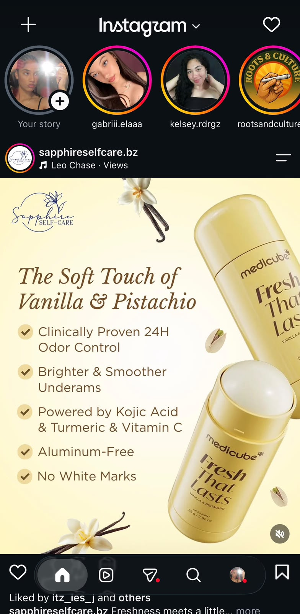
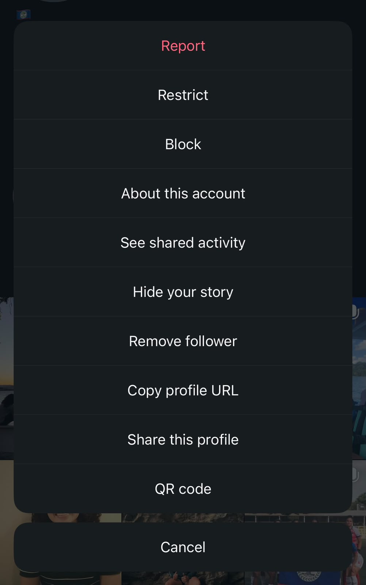

Hall of Shame: Instagram's Block / Restrict / Mute Menu
The Example


I Like…
- The profile layout is clean and photo-first, so it's easy to quickly scan what someone has posted.
- Stories and highlights are visually separated at the top, making it obvious what's temporary and what's permanent.
- Search suggests accounts and hashtags as you type, so finding a specific profile rarely takes more than a couple of characters.
I Wish…
- Block, Mute and Restrict were not presented as a flat list of similarly styled text options — they have very different real-world consequences, but nothing about how they look signals that. This is a poor mapping between the interface and the effect of each choice.
- Each option explained what it actually does right there in the menu — right now you need to already know (or go look up separately) that Mute hides their content from you while they are unaffected, or that Restrict quietly limits their comments without notifying them. That is relying on knowledge in the head at exactly the moment someone may be stressed and need to decide fast.
- Restrict — the option specifically designed for harassment situations where you do not want the other person to know anything happened — were not visually indistinguishable from the other two, even though it's the least well-understood of the three.
- There were some way to compare the three side by side before committing, since picking the wrong one (e.g. Block when you wanted the subtlety of Restrict) can escalate a situation the user was specifically trying to defuse quietly.
What If…
- Each menu item showed a short, plain-language description of its effect right next to the label (e.g.
They will not be notified. Their comments will need your approval before others see them.
) — turning a decision that relies on recall into one that only needs recognition. - Restrict were labeled with something like a "Recommended if you feel unsafe" badge, since it is the option built for exactly that situation but currently gets no special visual treatment.
- Tapping any of the three first opened a brief comparison view showing what all three do side by side, so someone could course-correct in place instead of having to back out and re-open the menu.
- The copy for each option were written from the user's perspective around real outcomes, rather than a single abstract verb ("Restrict") that doesn't convey what will or won't happen next.